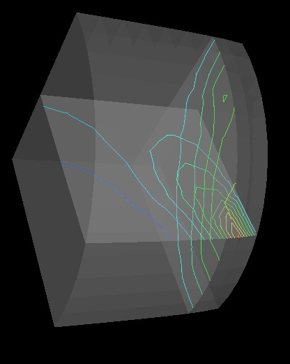

0.body: :0.b > ShowCont
Contour Values:
0 -31.0906
1 -25.827
2 -20.5634
3 -15.2998
4 -10.0361
5 -4.77253
6 0.491086
7 5.7547
8 11.0183
9 16.2819
10 21.5455
11 26.8092

| 3D example:
0.body: :0.b > ShowCont
|
| 2D example:
0.body: :0.b > ShowCont
|
 |
The "ShowContours" command can also be combined with the "ShowCuttingPlane"
command to show cutting planes with contour lines.
Ex:
|
 |